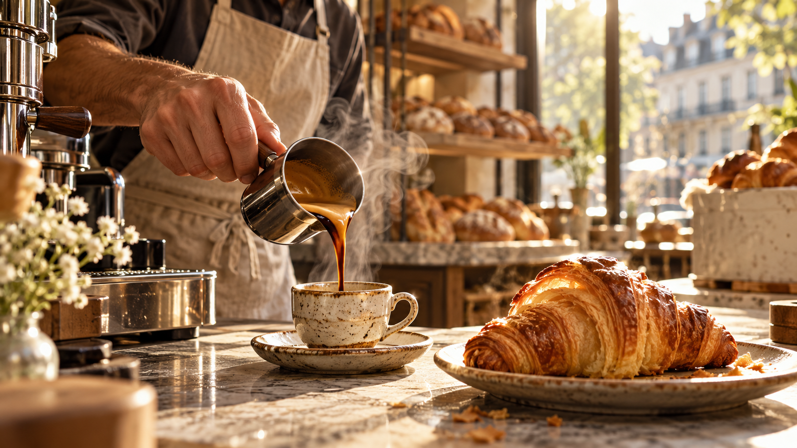

01 / FOLHADOPÃO QUENTE. CAFÉ PASSADO. GENTE PERTO.
O dia fica
melhor por aqui.
Fermentação lenta, café de origem e um lugar para deixar o tempo passar sem pressa.
Veja o que saiu do forno ↘Veja o vídeo acompanhar o scroll ↘RUA HARMONIA, 421 · VILA MADALENAABERTO HOJE · 08:00—19:00
O segredo é simples.
Tempo, cuidado
e mais um café.
A massa descansa o que precisa. O café chega de perto. E a porta fica aberta para quem aparecer.
02 / COADO
 03 / DA CASA
03 / DA CASATEMPO DE VERDADE
Algumas coisas
não combinam
com pressa.
A gente começa antes do sol. Não para fazer mais, mas para dar tempo ao pão de virar aquilo que ele pode ser.
Veja como chegar ↘02 — 04 / FEITO AQUIUMA MESA, SEM RESERVA
Tem lugar paraCAFÉ FORTE, MESA GRANDE E CONVERSA COM CALMA.Vem pra Miga ↗
mais um.
SEU LUGAR É AQUI
Passa
pra um café.
ENDEREÇO
Endereço ilustrativo
Vila Madalena · São Paulo
HORÁRIO
Abrir no mapa ↗Todos os dias
08:00 às 19:00